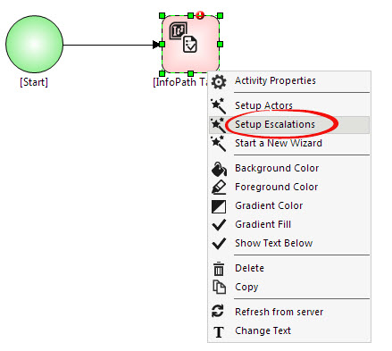
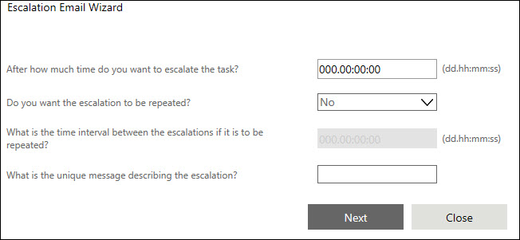
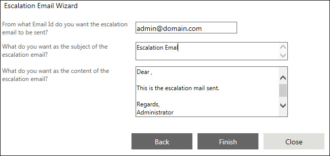

No
The AVEVA Work Tasks Escalation Email Wizard can be used to set the escalation properties for the activity. You can access this wizard by selecting the Setup Escalations option from the context menu of Human Activities, such as like Approval, Checklist.
The following image shows launching setup Escalations Wizard:

Setting the Properties through the Wizard
Step 1: Setting the Escalation Conditions
When you right-click a resource activity and select the "Escalation Email Wizard" option from the menu, the window shown below, corresponding to the first step of the wizard, is displayed. In this step the wizard guides you through the process for setting the escalation conditions for the activity. These conditions will determine at what point the task will be escalated. You can set the time limit for escalation in the first field. Specify the value in the "dd.hh:mm:ss" format. The task will be escalated after this time elapses without any action by the assigned actor. You can choose to repeat the escalation by selecting "Yes" in the corresponding drop down. In this case, you must also specify the time interval between the two escalations in the corresponding field, again in the "dd.hh:mm:ss" format. If you select "No" in the repeated escalation drop down, this field cannot be accessed. Finally, you must specify the unique message describing the escalation in the last field in this window. This can be any meaningful message that clearly describes the escalation. The example in the image below shows "Escalated to PM". After selecting the resources, click the Next button to go to the next step in the Actors Selection Wizard.
The following dialog box shows how to set the Escalation Conditions:

Step 2: Selecting the Actors for the Escalation
When you click the Next button in the first window of the Escalation Email Wizard, the window shown below is displayed. In this step, the wizard guides you through the process of selecting the actors to whom the task will be escalated. You can search for resources by specifying a search parameter. You can specify a value corresponding to user-related parameters like "Employee Name" or "Role in Project" partially or fully in the field provided and click the Search button to start the search. You can change the parameter by selecting from the drop down here. The resources brought up in the search are displayed in the Available Resources list box. You can add resources to the Selected Resources list by selecting the resource name in the first list and clicking the [>] button. To add all resources, click the [>>] button. Similarly, you can use the [<] button to remove a resource from the selected resources list, or the [<<] button to clear all the selected resources. After setting the limits, click the Next button to go to the next step. If you need to make any changes to the values specified in the previous step, click the Previous button.
The following dialog box shows how to selecting the actors:
Step 3: Setting up the Escalation Email
When you click Next button in the second window of the Escalation Email Wizard, the window shown below is displayed. In this step, the wizard guides you through the setting of the senders Email Id, the subject of the email and its content in the corresponding fields. To save the escalation values that you have set in the wizard, click Finish. This will save the new values and close the wizard. If you prefer not to save the values, click Close to exit the wizard. If you need to make any changes to the values specified in the previous step(s), click Previous.
The following dialog box shows how to set up the Escalation Email:
